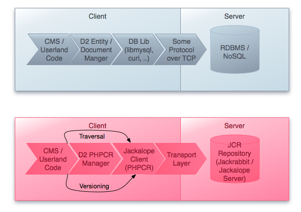

Symfony2 CMF Project
Why does the world need this?
Drupal is awesome!
No REALLY!
Drupal is awesome!
Drupal is awesome if you are an end user!
Powerful admin interface
Drupal is awesome if you are a sales guy!
Well known brand
Drupal sucks if you are a developer!
Drupal is CMS 1st, development framework 2nd
This is a legitimate prioritization for their users
Drupal developer nightmares ..
- .. no clean separation of configuration, logic and content
- .. no clean deployment and staging concept
- .. inconsistent cache layers
- .. function callback AOP is not every ones cup of tea
- .. lots of legacy baggage
- .. NIH (not invented here) syndrom
Note the Drupal guys agree and are actually collaborating with Symfony2 to improve
Do we also suffer from NIH?
- Collaboration with Drupal and others to share basic content management code
- Based ourselves as much on standard tools and specs
- Leverage existing bundles and technologies of the Symfony and web world
- Deliver value within a reasonable time
CMF = Content Management Framework
- In other words: its a toolbox to create your own custom CMS
- Not a one size fits all, but increase code sharing
- Imagine Diem, Sympal, Apostrophe all build on the same content foundation
The Symfony CMF project makes it easier for developers to add CMS functionality to
applications built with the Symfony2 PHP framework. Key development principles for the provided
set of bundles are scalability, usability,
documentation and testing
What is Content Management?
User controlled
- Content
- Menu structure
- Routes (URLs)
- Page structure (to some extent)
The CMF solutions to these requirements are discussed in the "Big picture" slide set
Data in a CMS is mostly unstructured
RDBMS are not a good fit, hurray for NoSQL

CMS often organize content as a tree/graph
Most NoSQL not a good fit, hurray for Graph DBs

CMS should be able to store content versions

Complexity shouldn't overwhelm developers
Need a solution that can scale both from small to large projects and we want to get somewhere within 12 months!
Enter Doctrine PHPCR ODM
PHP Content Repository + Doctrine ODM
PHPCR (aka PHP-ified JCR specification)
Works like MongoDB or CouchDB ODM, but also includes a tree/graph, versioning API

PHPCR provides a standardized API that can be used by any PHP content management system to interface with any content repository.
PHPCR implementations
- Jackalope
- Jackrabbit (via Http WebDav/Davex) transport layer
- Doctrine DBAL transport layer
- Midgard2 PHPCR
- ..
PHPCR has been submitted to the JCR spec at the request of David Nüschler, JCR spec lead
Not all data fits well in PHPCR/JCR
- For example aggregation is better done in an RDBMS
- Store web store product description in PHPCR/JCR
- Store web store inventory and orders in RDBMS
Door swings both ways, so remember
Welcome to the real world
- Quiet Storm Solutions is utilizing the CMF and to drive a newly launched Saas CRM service
- ServerGrove is using the PHP content repository in their KnowledgeBase tool.
- Liip integrated the CMF as a simple editing solution into Symfony web applications like www.barometredesprix.ch.
- Eat your own dog food: The Liip website is built on top of the CMF
Interest is huge!
- Over 300 people on the mailinglist
- About 5 more per month
- All key decisions have been made in public forums
- Multiple people are working and committing to all parts of the code
Next steps
Constantly moving... The best entry point to see what is going on right now is the CMF Roadmap